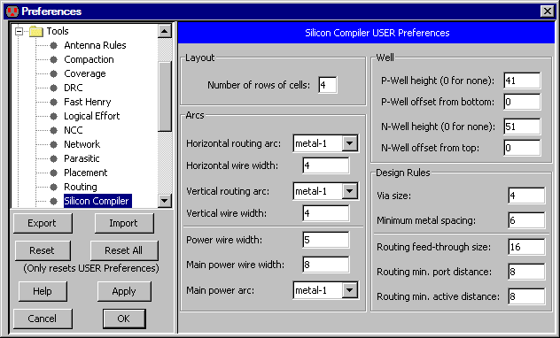

Silicon compilation is the process of converting from a hardware description language (such as Verilog or VHDL)
directly to placed and routed silicon.
Electric has two ways of accomplishing this task.
The old way uses a silicon compilation system called QUISC
(the Queen's University Interactive Silicon Compiler).
The second way, which is more modern and powerful,
uses Electric's separate tools for converting hardware description code,
placing it,
and routing it.
The Old Way: QUISC
QUISC is a powerful tool that can do placement and routing of standard cells from a schematic or a structural VHDL description.
The VHDL is compiled into a netlist which is then used to drive placement and routing.
Schematics are first converted into VHDL, then compiled to a netlist and laid-out.
Thus, a byproduct of silicon compilation will be a {net.quisc} view of a cell, and potentially a {vhdl} view.
Be warned that the silicon compiler is rather old,
and so it produces layout that alternates standard cell rows and routing rows.
Modern silicon compilers use multiple metal processes to route over the standard cells,
but this system does not.
This system uses two layers: a vertical routing arc to run in and out of cells,
and a horizontal routing arc to run between the cells in the routing channel.
It also uses power arcs to bring power and ground to the cell rows,
and main power arcs to connect the rails on the left and right.
The VHDL description is normally placed in the "vhdl" view of a cell
(see Section 4-9 for more on text editing).
There is a VHDL example in cell "tool-SiliconCompiler{vhdl}" of the "samples" library.
To access it, use the Load Sample Cells Library command (in menu Help).
To convert a schematic or VHDL cell into layout, use the Convert Current Cell to Layout command
(in menu Tools / Silicon Compiler).
To compile VHDL or Verilog to the {net.quisc} view, use the Compile VHDL to Netlist View
or Compile Verilog to Netlist View commands.
(these are typically not needed, since the previous command does it automatically).
When creating a schematic or VHDL cell to be compiled,
it is important to know what primitives are available in the standard cell library.
Electric comes with a CMOS cell library in the MOSIS CMOS ("mocmos") technology.
This library is not correct, and exists only to illustrate the Silicon Compiler.
These component declarations are available:
component and2 port(a1, a2 : in bit; y : out bit); end component;
component and3 port(a1, a2, a3 : in bit; y : out bit); end component;
component and4 port(a1, a2, a3, a4 : in bit; y : out bit); end component;
component inverter port(a : in bit; y : out bit); end component;
component nand2 port(a1, a2 : in bit; y : out bit); end component;
component nand3 port(a1, a2, a3 : in bit; y : out bit); end component;
component nand4 port(a1, a2, a3, a4 : in bit; y : out bit); end component;
component nor2 port(a1, a2 : in bit; y : out bit); end component;
component nor3 port(a1, a2, a3 : in bit; y : out bit); end component;
component nor4 port(a1, a2, a3, a4 : in bit; y : out bit); end component;
component or2 port(a1, a2 : in bit; y : out bit); end component;
component or3 port(a1, a2, a3 : in bit; y : out bit); end component;
component or4 port(a1, a2, a3, a4 : in bit; y : out bit); end component;
component rdff port(d, ck, cb, reset : in bit; q, qb : out bit); end component;
component xor2 port(a1, a2 : in bit; y : out bit); end component;
The Silicon Compiler Preferences (in menu File / Preferences..., "Tools" section, "Silicon Compiler" tab)
let you control many aspects of placement and routing.

- The "Layout" section controls the number of rows of cells that will be created.
A one-row circuit may be exceedingly wide and short, so you may wish to experiment with this value.
For a square circuit, the number of rows should be the square root of the number of instances in the circuit
(the number of instances appears as the sum of the unresolved references,
listed by the VHDL Compiler).
- The "Arcs" section lets you set the horizontal and vertical routing arcs, as well as the power rails.
- The "Well" section gives you the option of placing blocks of P-well and N-well over the cell rows.
- The "Design Rules" section lets you control Via size, metal spacing, feed-through size,
port distance, and active distance.
The New Way: Individual Tools
To do silicon compilation of Verilog or VHDL using the more advanced tools,
a three step process is necessary:
- Compile to a rats-nest circuit.
Read in a standard cell library,
and bring the hardware description language code (Verilog or VHDL) into a cell.
Make sure to check "Make Layout Cells (not Schematics)" in the "Verilog" preferences
(see Section 9-4-2).
With this cell, use the Convert Current Cell to Rats-Nest Structure command
(in menu Tools / Silicon Compiler).
This generates a cell that has all of the standard cells, placed randomly,
and connected with "Unrouted" arcs.
- Place the cells.
Now use the Floorplan and Place Current Cell command
(in menu Tools / Placement).
This takes the rats-nest cell and redoes the placement so that subcells are in the right place.
You may want to set the "Run routing after placement" in the Placement Preferences.
You may also want to set the "Padding" around placed subcells, also in the Placement Preferences.
- Route the cells.
If you did not ask for routing after placement, you can do the routing now.
Use the Sea of Gates Route this Cell command
(in menu Tools / Routing).
If the placement system broke the circuit into subcells (complex circuits have this happen),
then you will want to route the subcells first, with the Sea of Gates Route Sub-Cells command.
After routing, you may want to redo the placement with different padding.
You may also want to adjust the routing parameters to get better results,
and you can always unroute and re-route individual networks.